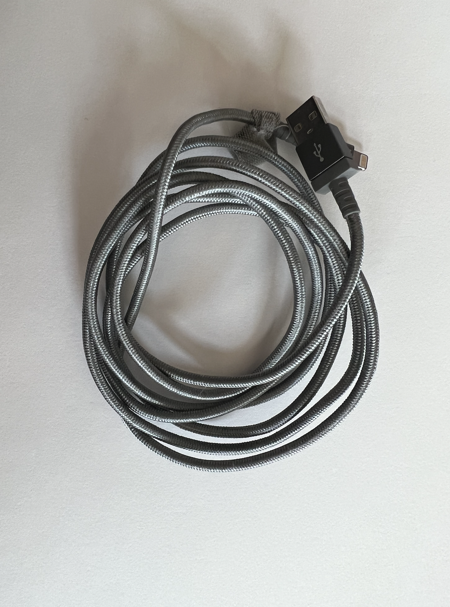
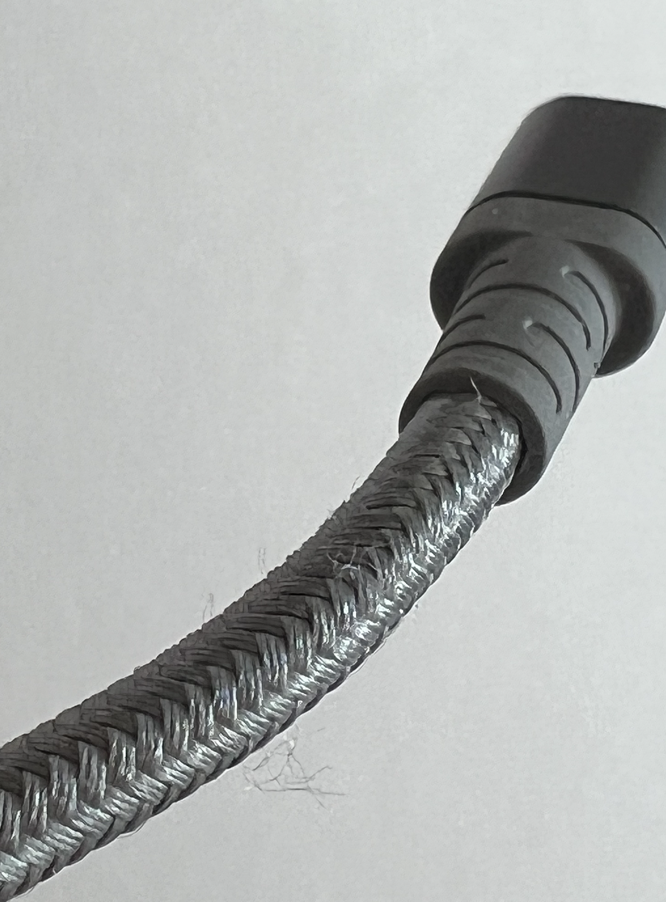
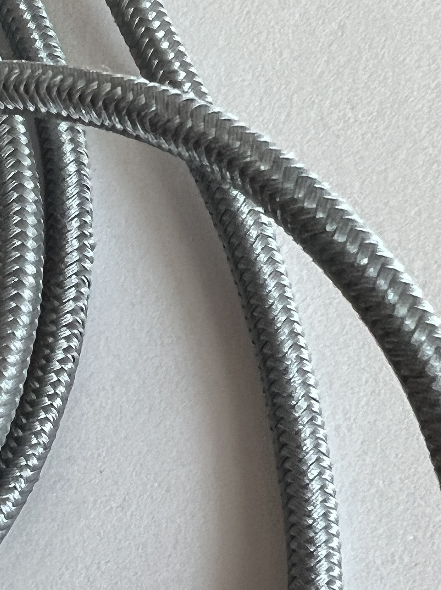
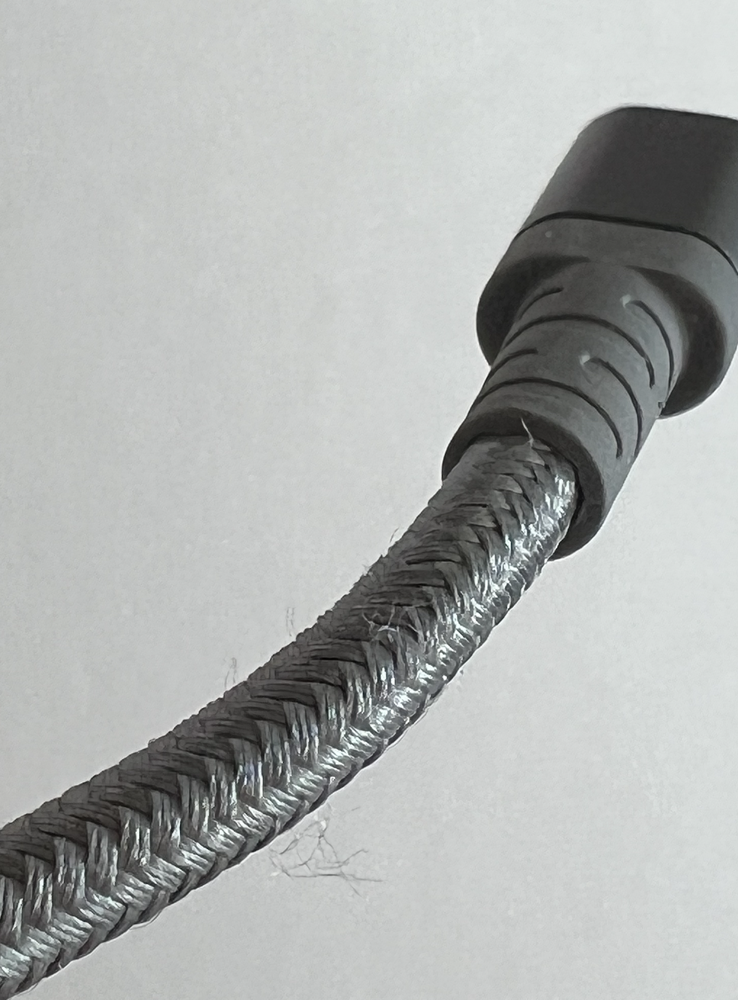
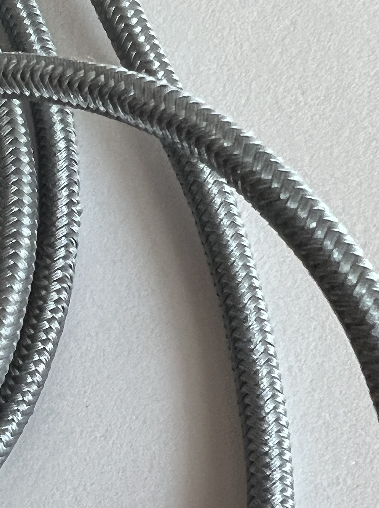

1 Weeklie Documentation
Lily Kamas
Creative Space & Documentation Possibilities
What are you setting out to do?
During this week, I hope to recognize the space I have around me and begin to prepare for this upcoming semesters assignments.
Process Notes
I have a woven phone cord that is supposed to be resistant to tearing/exposing the wires. I'm sure the plastic is just wrapped with this woven texture, but it would be interesting to see if it was just the woven shell with the wires directly inside. I noticed there was some fraying near the end that would usually be impacted by general use (and would possibly tear/expose the wires on a regular cord). Regardless it is tight-knit, the material is somewhat reflective, and it is woven in a chevron-type design pattern. There are about ten rows around the circumference of the cord, and it is about six feet long.
As far as future documentation goes, I am not sure how to upload video, and google doc’s doesn’t support ‘live photos’. I have ‘still photos’ for now, but I am sure my documentation style will update.
Reflection
My main space this semester will be at my dining room table, in the center of my apartment. Due to some of my crafts, I have a nice headlamp that I acquired specifically for crafting use. Additionally, I have a super bright desk lamp (for my puzzles) and a bright overhead light. To keep my home projects separate from school, I will go to Goodwill this week and buy a dedicated wicker basket for both projects.
While my concentration is more focused while I sit at my desk, sitting there for hours can be quite uncomfortable. Therefore I have a second dedicated space that is more comfortable, my couch. I have an extra pillow for back support and an additional pillow to put on my coffee table to protect my legs (and keep them comfortable)! Finally, I have a dedicated space on my computer to keep all class files, including all of the photos I use, and I’ve decided to use a large notebook to take my photos for a clean background
Here are the images from my woven phone cord:
 



Thank you for reading my response! If you wish to see my other assignments for Experimental Textiles, click here!